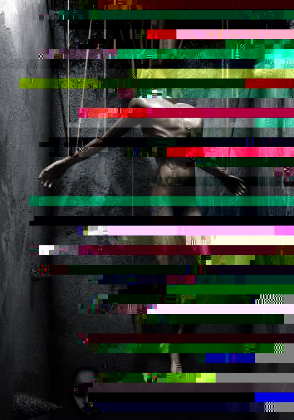

David Ho
digital illustration
NOTES
David Ho describes his work as "illustrations" but that may just be humility in the face of the dark, disturbing world that he visualizes. "I do what I do," he writes, "as a form of escape... my world [is] a playpen where inhibitions, imaginations, madness, fears and angers run wild in a frolicking orgy of psychobliss. In this world, I am God, passion is my disciple and repression is my anti-Christ." David was born in New York City in 1969, took a degree in sociology from the University of California at Berkeley, decided to dedicate himself to art, and took another degree in art history and fine arts at San Jose State in pursuit of his ambition. He is a successful freelance designer/illustrator. Art is both his vocation and avocation. He asks, "Without art could we visualize the appearance of God when we pray?"
Loss of self
|
 |